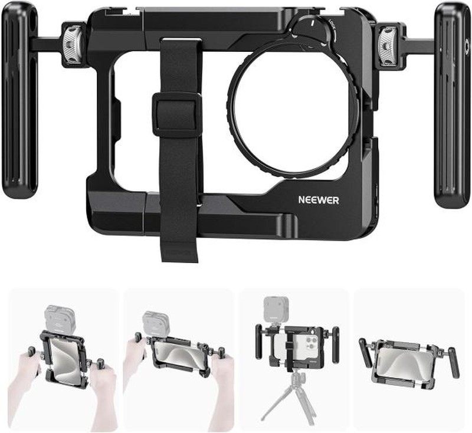
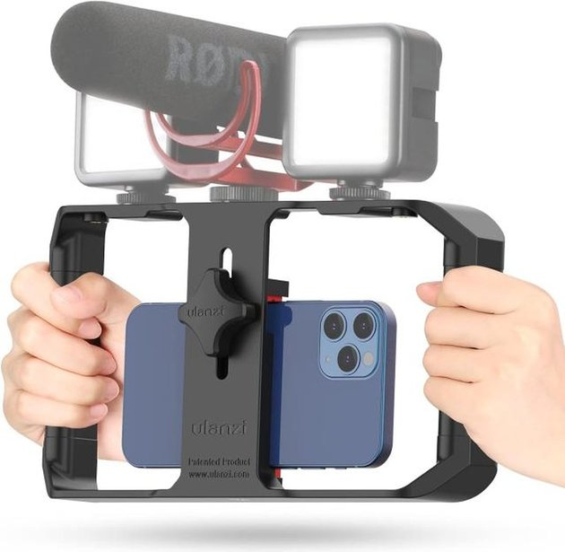

5 Best Universal Video Cages for Samsung & Android Creators (2026)
Last updated: August 27, 2026 Research-based guide techpicksio.com
Buy the Neewer PA017 Universal Smartphone Video Rig. First, ignore every MagSafe cage marketed at iPhone owners — your Galaxy or Pixel has no magnet ring, and a magnetic mount without one is a dropped phone waiting to happen. What you want is a clamp that grips the phone mechanically, and the spec that decides the purchase is how far that clamp opens. The Neewer's holder extends from 5.5–6.9″ (140–175mm), which swallows an S25 Ultra with the case still on, where narrower cages leave you prying your phone out of a case before every shoot.
How we pick: published manufacturer specifications and aggregated user reviews — not hands-on testing.

Neewer PA017 Universal Smartphone Video Rig
The one to buy if your Android flagship is too big for iPhone-first cages. Buy it once and grow into it — the handles, cold shoes and 67mm filter adapter mean you won't be shopping for a second rig in six months.
- Fits phones
- 5.5–6.9″ (140–175mm)
- Mounts
- Cold shoes + 1/4"
- Extras
- Dual handles, 67mm filter adapter
Newer to this than the guide above assumes? Start with the content creator starter kit — the four pieces worth owning before you compare models in any one category.
Why Android Users Need a Different Cage
Most premium iPhone cages rely on MagSafe, the magnetic ring built into iPhones. Samsung, Pixel, and other Android phones don't have that ring, so a MagSafe cage won't hold securely without adding a magnetic case or adapter. The reliable solution for Android is a clamp-style universal cage that grips the phone mechanically — the key spec to check is the clamp's minimum and maximum opening, since large phones like the Galaxy S25 Ultra need plenty of range, especially with a case on.
Top Universal Android Cages Compared
| Model | Clamp Type | Fits Phone | Mounts | What It Means for You |
|---|---|---|---|---|
| Neewer PA017 Rig | Extending frame clamp | 5.5-6.9" long (140-175mm) | Cold shoes + 1/4" + 67mm filter | Widest device range here — fits an Ultra-class phone in a case, and the handles come in the box |
| Zeadio Aluminum Cage Rig | Adjustable clamp | Universal | 3 cold shoes + 1/4" | Metal frame that doesn't flex with a mic and a light both hanging off it |
| Ulanzi U-Rig Pro | Spring clip + screw | ~50-89mm wide (2-3.5") | 3 cold shoes + 2x 1/4" | Most mounting points per dollar if you're stacking a mic, light, and monitor |
| Ulanzi Rig Kit w/ Handles | Spring clamp | ~64-88mm wide | Dual handles + cold shoes | Two-handed grip steadies walking shots more than a single-handle cage |
| Zeadio Triple Cold-Shoe Grip | Spring clamp | Universal | 3 cold shoes | Skips the cage entirely if you just need a stable handle to mount gear on |
Clamp ranges per manufacturer listings and vary by revision. Measure your phone (with case) before buying.
1. Neewer PA017 Universal Smartphone Video Rig — Best Overall
The PA017 holds the phone by its length rather than pinching the sides, and the holder extends from 5.5–6.9″ (140–175mm) — enough for the largest Android flagships with a case on. Two aluminum side handles rotate 360° and mount on either side using 1/4" screws, so you can run it as a bare cage, a single-handle grip, or a dual-grip rig. The detachable 67mm filter adapter is the part no other rig here has: it screws onto the front so you can drop an ND or CPL in front of the main camera instead of shooting wide open in daylight. Add the anti-drop cold shoe for a wireless mic receiver and it's the most complete single purchase for a Galaxy or Pixel shooter.
👍 Why We Picked It
- ✅ Fits large Android phones with a case on
- ✅ Dual 360° rotatable aluminum handles included
- ✅ 67mm filter adapter for ND and CPL filters
👎 Where It Falls Short
- ❌ Priced above basic no-name clamps
- ❌ Bulkier than a bare cage once both handles are on
Check Live Neewer PA017 Price on Amazon
2. Zeadio Aluminum Cage Rig — Best All-In-One Kit

This is the kit to buy if the phone is only half of what you shoot. A U-shaped stabilizer handle carries an aluminum phone cage, a pair of side grips, and an action-camera adapter, so the same rig takes a Galaxy today and a GoPro or Osmo Action tomorrow. Three cold shoes and a 1/4"-20 base mean a mic, a light and a tripod plate can all live on it at once, and the metal frame doesn't flex the way plastic clamp cages do under that load.
👍 Why We Picked It
- ✅ All-metal cage plus U-grip stabilizer in one purchase
- ✅ Action-camera adapter included, so it isn't phone-only
- ✅ Three cold shoes and a 1/4"-20 tripod base
👎 Where It Falls Short
- ❌ Heaviest option here once fully assembled
- ❌ Overkill if you only ever shoot on the phone
Check Live Zeadio Aluminum Cage Price on Amazon
3. Ulanzi U-Rig Pro — Best Value

The U-Rig Pro is a long-running favorite for its price-to-features ratio: three cold shoes and two 1/4"-20 threads for a low cost, fitting phones ~2-3.5" wide. The one caveat for Android users is the upper clamp limit — verify a very large phone like the S25 Ultra fits with your case before buying.
👍 Why We Picked It
- ✅ Excellent value for the mounting points offered
- ✅ Three cold shoes for mic + light + monitor
- ✅ Lightweight aluminum build
👎 Where It Falls Short
- ❌ Upper clamp width tight for the biggest phones + cases
- ❌ Single-handle design, less stable than dual-grip rigs
Check Live Ulanzi U-Rig Pro Price on Amazon
4. Ulanzi Universal Rig Kit with Handles — Best Dual-Grip Kit

If you want the two-handled cage look for an Android phone, this Ulanzi kit delivers dual grips and cold-shoe mounts in one purchase, with a ~64-88mm clamp. It's a good middle ground between a bare cage and the bulkier Zeadio stabilizer kit.
👍 Why We Picked It
- ✅ Dual handles plus cold-shoe mounts included
- ✅ Supports horizontal and vertical shooting
- ✅ Comfortable silicone grips
👎 Where It Falls Short
- ❌ Narrower max clamp than the Neewer PA017
- ❌ Heavier once both handles are attached
Check Live Ulanzi Rig Kit Price on Amazon
5. Zeadio Triple Cold-Shoe Grip — Best Simple Handheld

If you don't need a full cage and just want a stable handheld grip with somewhere to mount a mic and light, the Zeadio triple cold-shoe handle is a minimalist, affordable option that works with essentially any phone width via its universal clamp.
👍 Why We Picked It
- ✅ Simple, affordable, universal fit
- ✅ Three cold shoes despite compact size
- ✅ Works with action cams and DSLRs too
👎 Where It Falls Short
- ❌ A grip, not a full protective cage
- ❌ Single-hand hold less steady than dual grips
Check Live Zeadio T-Grip Price on Amazon
Frequently Asked Questions
Will a MagSafe cage work on a Samsung Galaxy or Pixel?
Not securely on its own. MagSafe relies on the magnet ring built into iPhones, and Android phones do not have one, so a magnetic cage has nothing to grip. You would need a MagSafe-compatible case or a stick-on adapter ring first. A clamp-style universal cage, which holds the phone mechanically, is the more reliable route for Android.
What clamp range do I need for a Galaxy S25 Ultra with a case on?
Check the clamp's stated opening against your phone measured with the case attached. The Neewer PA017 holds the phone by its length and extends from 5.5 to 6.9 inches (140–175mm), which covers Ultra-class phones in a case. Spring-clamp rigs such as the Ulanzi U-Rig Pro grip across the width instead, around 50–89mm, so a very large phone in a thick case can exceed them.
What is a cold shoe mount, and how many do I need?
A cold shoe is the small bracket that holds an accessory such as a wireless microphone receiver or an LED light. It is 'cold' because it carries no electrical contact — it is purely a mechanical mount. Count one shoe per accessory you plan to run at the same time; two covers a mic and a light, which is what most mobile setups actually use.
Do I need side handles, or is a bare cage enough?
A bare cage is enough if you shoot mostly on a tripod or stay static. Handles matter when you walk: a two-handed grip steadies movement far more than a single-handle cage, which is why the dual-grip kits in this guide are the ones aimed at handheld work. The trade-off is bulk — a fully assembled dual-handle rig is noticeably larger in a bag.